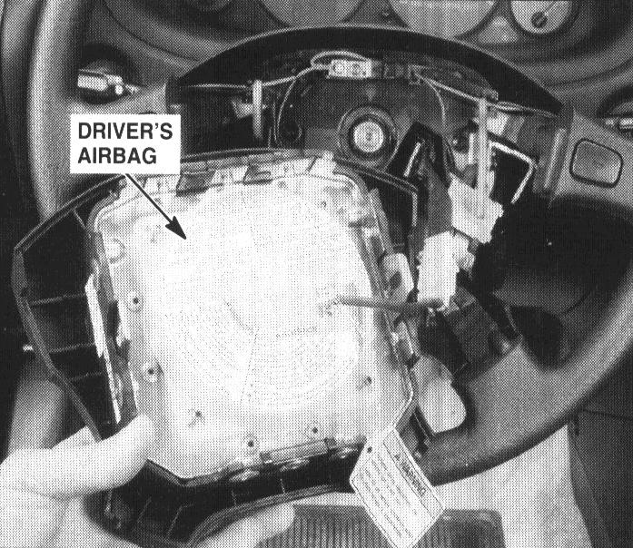

Operation CHARM
: Car repair manuals for everyone.
Home
>>
Acura
>>
1995
>>
Integra (GS-R) L4-1797cc 1.8L DOHC (VTEC)
>>
Repair and Diagnosis
>>
Restraints and Safety Systems
>>
Air Bag Systems
>>
Air Bag
>>
Locations
>>
Driver's Side
Driver's Side
49. Center of Steering Wheel:

Center Of Steering Wheel